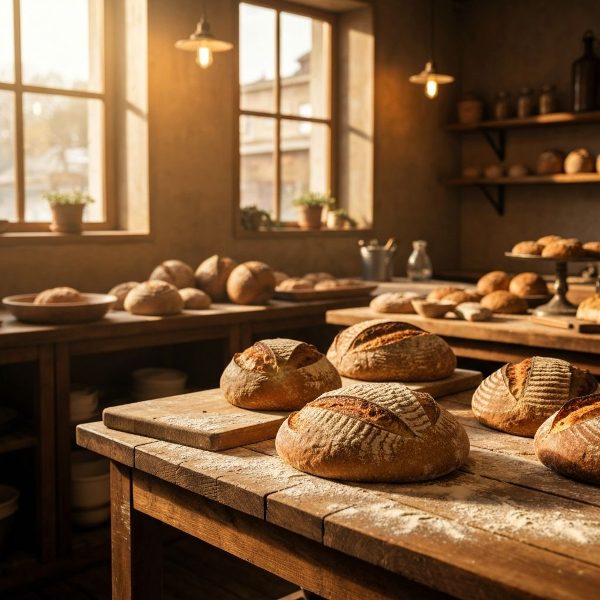
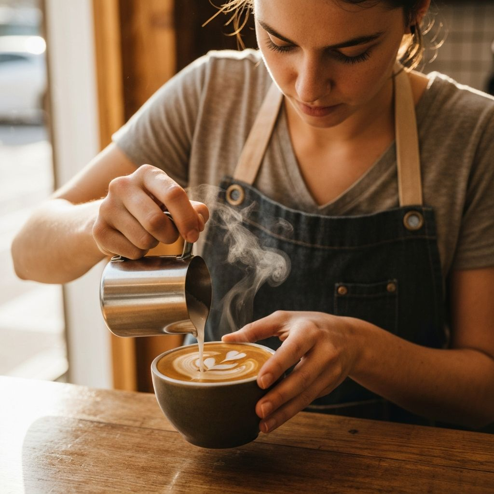
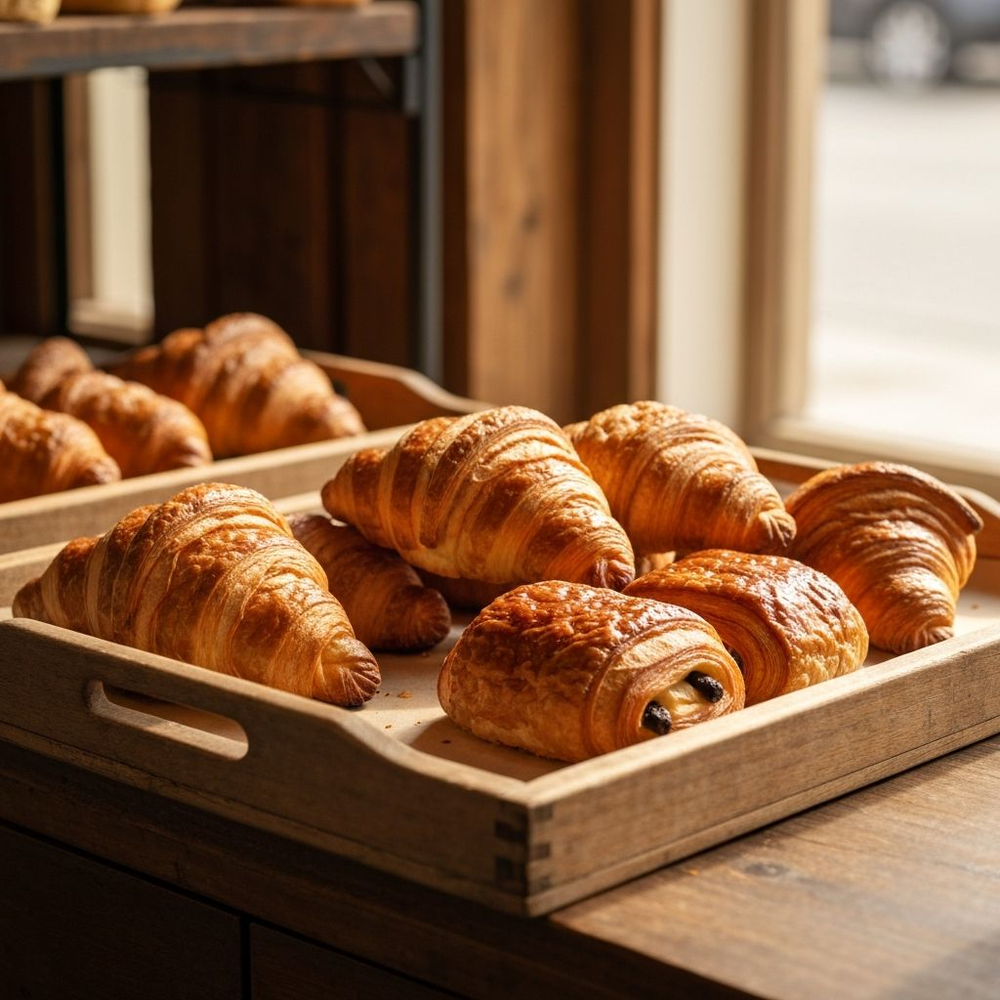
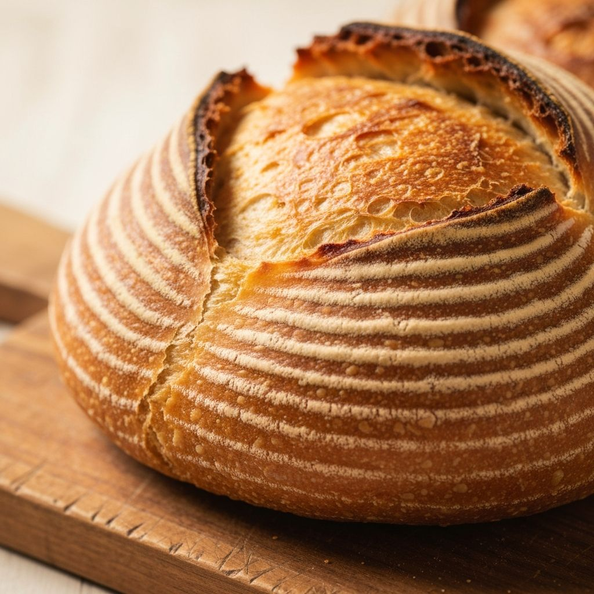
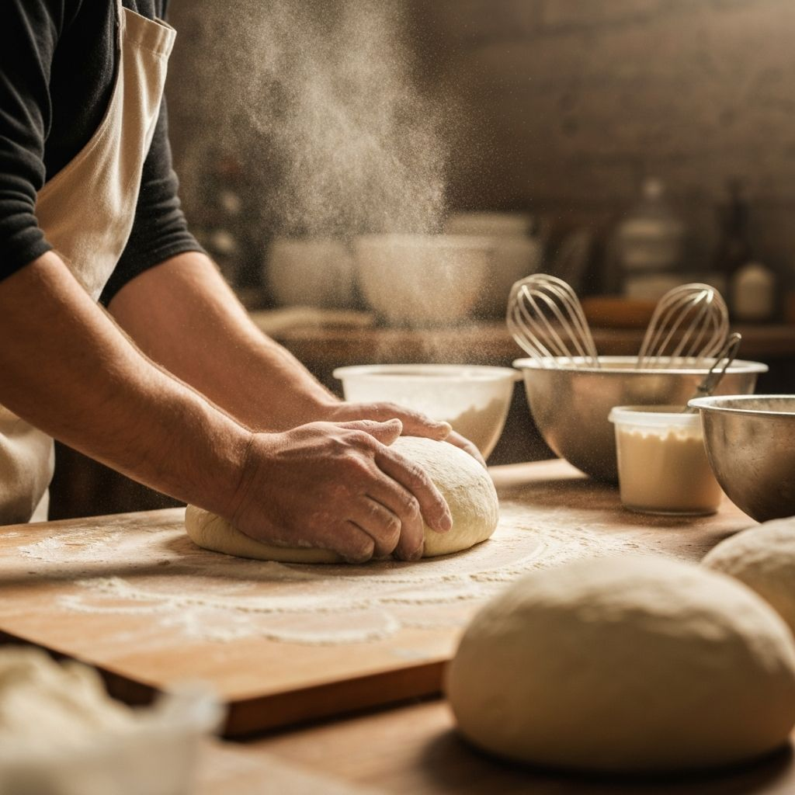
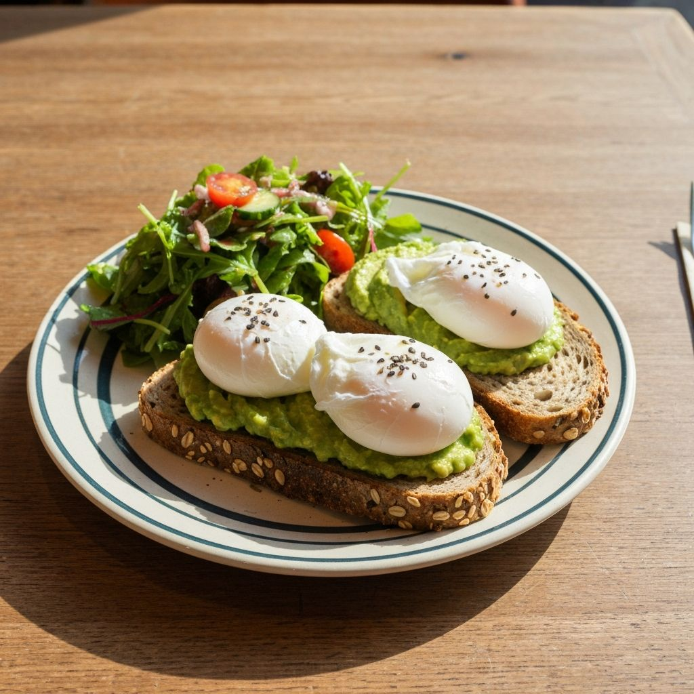
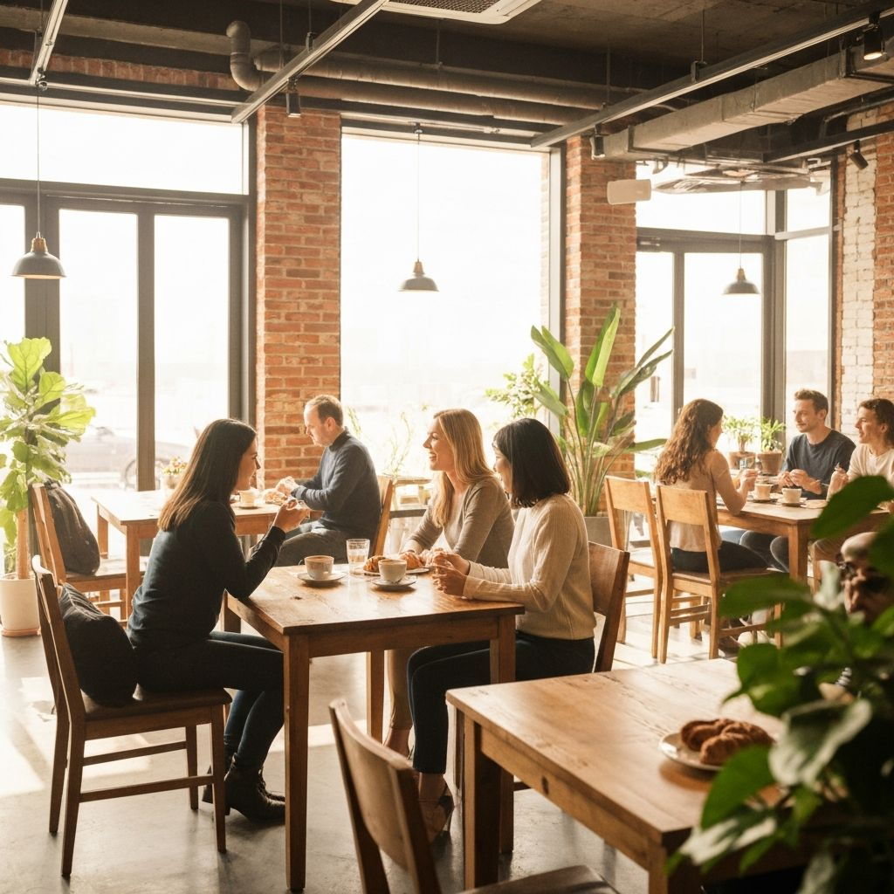
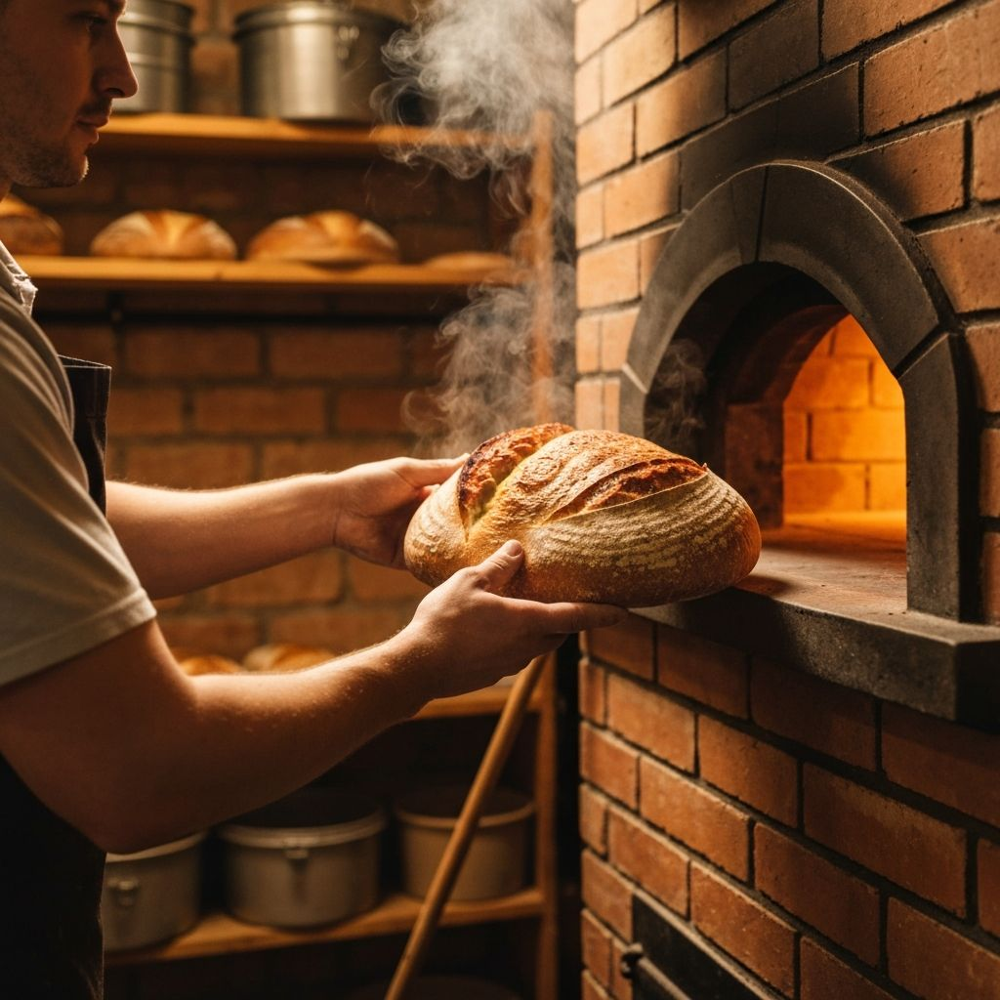

pan de masa madre real, café bien preparado, producción propia y procesos visibles. Sin pose, sin vueltas.
Honesto happenings
Lo de todos los días, bien hecho.
Amasar, esperar, hornear
Lo básico, hecho como corresponde. Todos los días.
Conocé nuestro proceso →
Carta de temporada
Ingredientes nobles, platos claros. Comer bien no tiene que ser un desafío.
Ver la carta →
Un lugar para quedarse
Espacio cómodo para trabajar, estudiar, encontrarse o simplemente estar.
Visitanos →"Los libros, libres amigos,
que dicen verdades claras.”
Producto real. Sin pose.
Fermentación de 24 horas
Corteza, miga y tiempo. Producción propia con harinas nobles y el respeto que merece un buen pan.
Bien preparado, todos los días
No hace falta saber de café de especialidad para notar la diferencia. Se nota en la taza.
Rica y casera
Ingredientes nobles, preparaciones claras, porciones honestas. Comer bien no tiene que ser un desafío.
Las de siempre, bien hechas
Recién salidas. Sin vueltas. Con la manteca y el tiempo que hacen falta.
la masa madre lleva tiempo. Por eso se nota.
No ocultamos procesos. Mostramos cómo trabajamos porque confiamos en lo que hacemos. La cocina es visible, el horno está a la vista y el café se calibra todos los días.
-
01
Fermentación
La masa descansa las horas que necesita. Sin apuro.
-
02
Producción propia
Cada pan sale de nuestra cocina. Sin terceros, sin atajos.
-
03
Masa madre real
Sin levadura comercial. La fermentación natural hace el trabajo.

Calidad contemporánea. Identidad cordobesa.
En un mundo donde todo intenta parecer más de lo que es, donde cada café viene acompañado de un manifiesto y cada pan necesita una explicación épica, honesto elige que el protagonismo lo tengan el producto, el servicio y el oficio.
La masa madre es real. El café está bien calibrado. El horno se ve. El proceso no se esconde detrás de una estética calculada.
Coherencia
Lo que decimos es lo que servimos.
Maestría
El saber hacer que no se negocia.
Transparencia
Procesos visibles, confianza real.
Cercanía
Cerca sin invadir. Trato humano.
Nos vemos mañana
elegí bien hecho.
Pasá antes de la oficina. Lo de todos los días también puede estar bien hecho. Buen café, buen pan y una mesa para arrancar mejor.
Menos show, más producto.